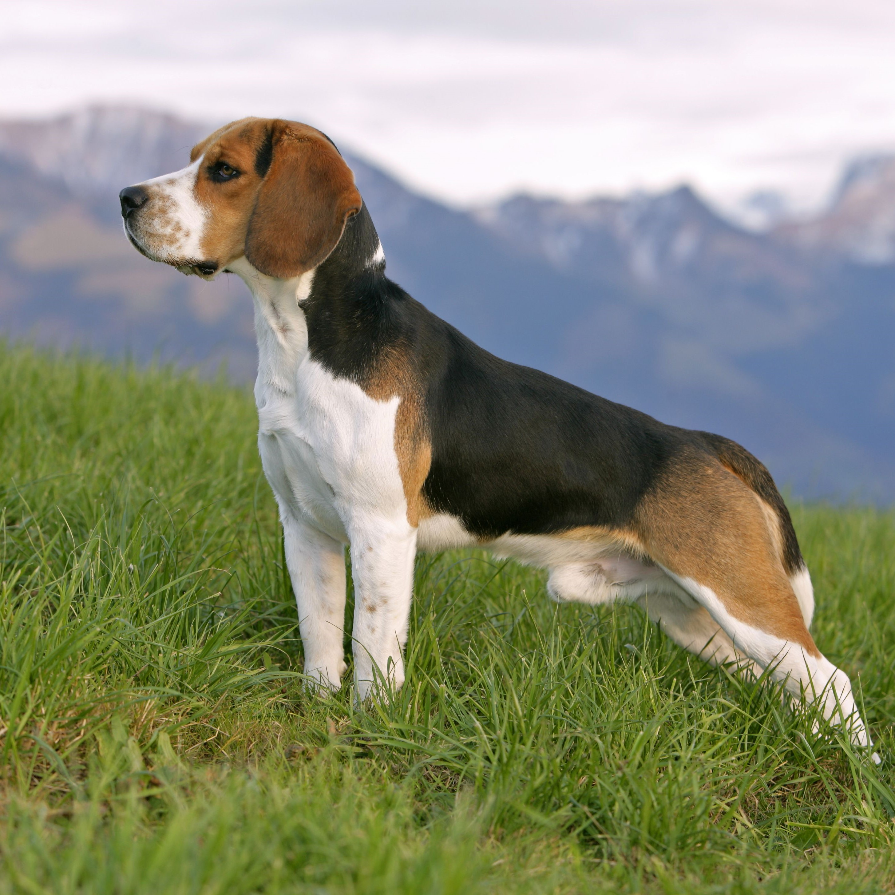

Beagle
| Weight: | 10 - 11kg |
|---|---|
| Coat | Short haired, hard coat of medium length |
| Color | Many colors |
Small, compact, and hardy, Beagles are active companions for kids and adults alike. Canines of this dog breed are merry and fun loving, but being hounds, they can also be stubborn and require patient, creative training techniques. Their noses guide them through life, and they’re never happier than when following an interesting scent. Beagles originally were bred as scenthounds to track small game, mostly rabbits and hare. They’re still used for this purpose in many countries today, including the United States. But you’ll find plenty of these pups living as companion dogs and loving, furry family members.